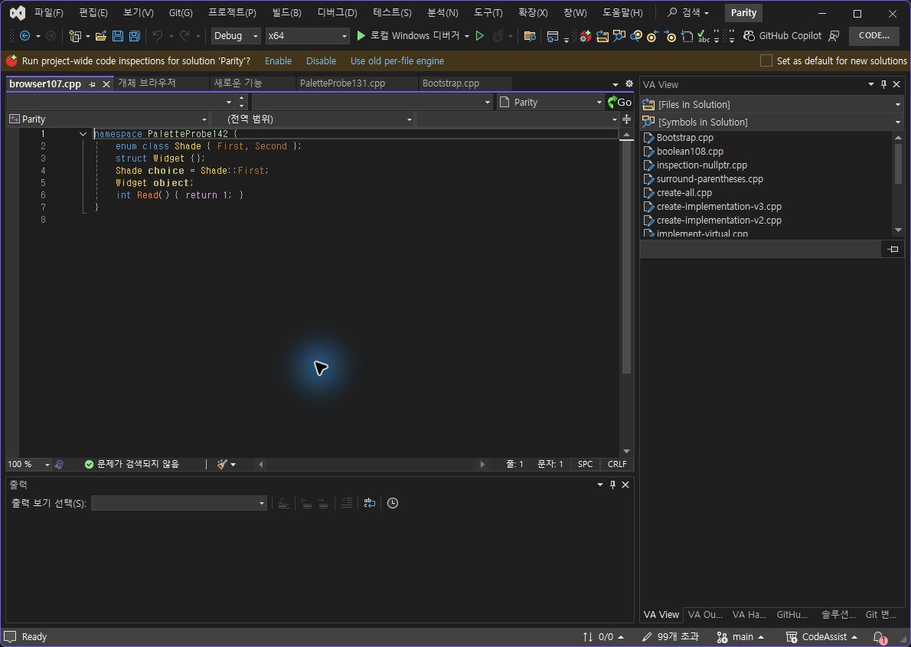
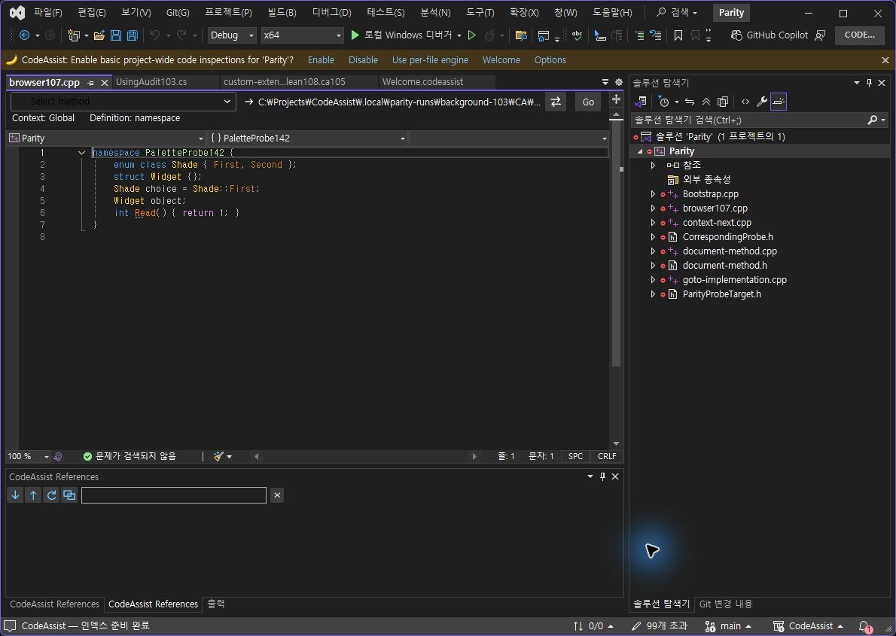
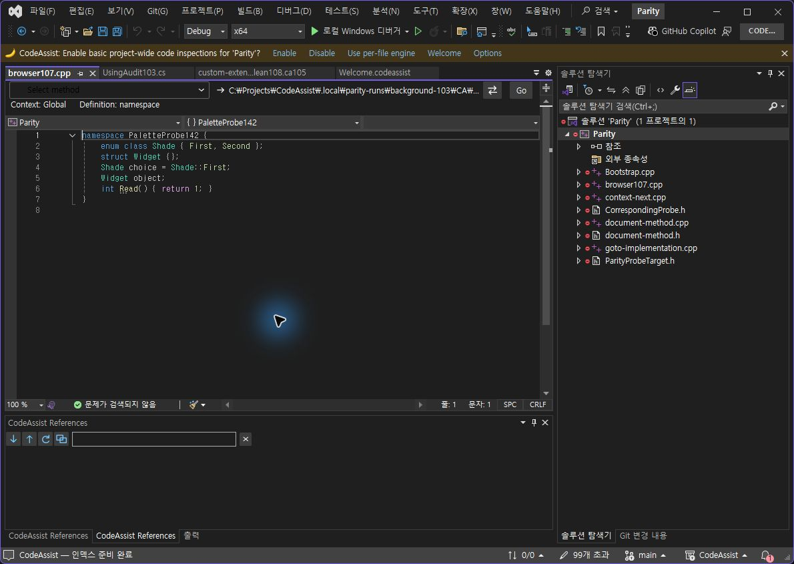
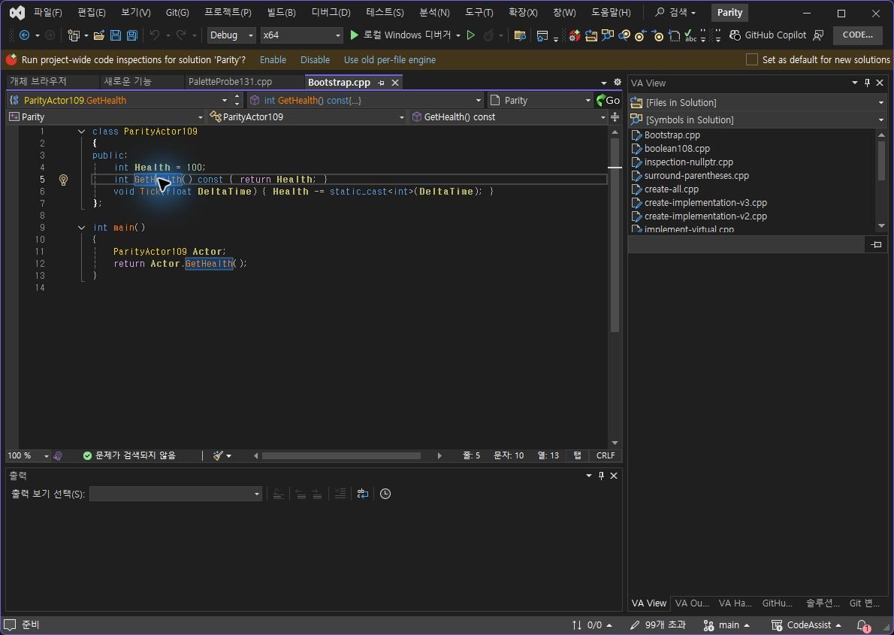
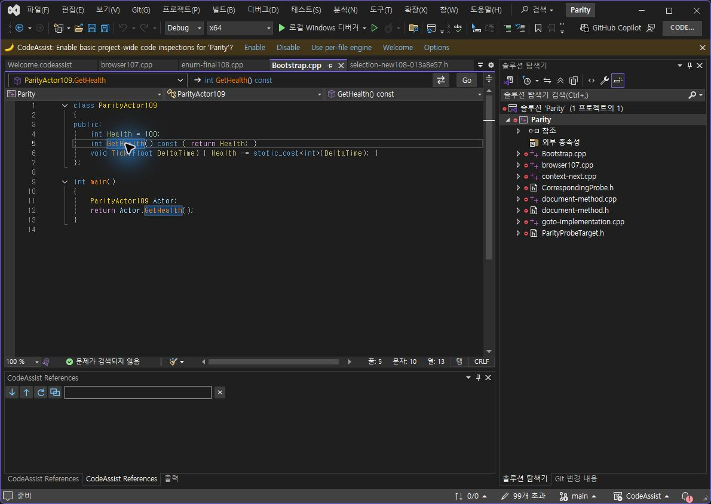
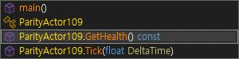
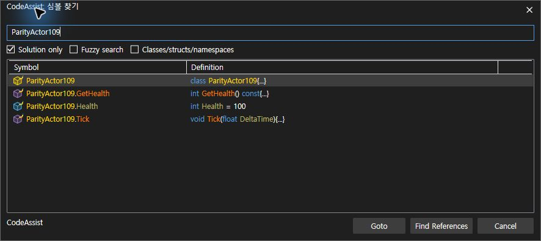

Tracefolio REPORTS & ISSUES
Tracefolio REPORTS & ISSUESVA·CA 실행 대조 — 최신 설치 0.0.145
기존 기록 이전원문에 기록된 작업 내용과 당시 검증 범위를 정리한 보관 기록입니다.
VA·CA 실행 대조 145
VA·CA 실행 대조 — 최신 설치 0.0.145
전체 작업 진행 중입니다. 선별 출력 표본 8/9개 · 88.89% 일치. 제품 전체 동기화율이 아닙니다. 서로 다른 버전의 실행 증거를 명시하며, 과거 통과를 최신 버전 전체 인증으로 재계산하지 않습니다.
| 지표 | 개수·백분율 | 범위 |
|---|---|---|
| 선별 출력 표본 | 8/9 · 88.89% | 기존6건 + Text Editors On/Off 2건 + Navigation Bar On 1건. 툴팁 구성 차이1건. |
| 12개 옵션 중 양쪽 실행 근거 | 6/12 · 50% | 한 상태 이상 비교. 완전 통과율 아님 |
| 12개 옵션 중 표본 On/Off 일치 | 3/12 · 25% | Views·Object Browser·Text Editors |
| Core 회귀 | 401/401 · 100% | Core 소스 불변. VA 동등성·UI 검사와 구분 |
| 문서 부분 명세 | 108/108 · 100% | 전체 역분석 완료율 아님 |
| 전체 gate 인증 | 0/108 · 0% | 전체 인증 미확보. 구현률0%라는 의미 아님 |
같은 프로젝트 소스 — 편집기 색상 켜짐
VA

CA

편집기 색상 끄기 — 새로 로드한 같은 소스
VA
CA

양쪽 버퍼 문자열·저장 상태를 VA · CA에서 확인했습니다. CA 프로젝트에 시험 파일이 빠져 있던 조건 차이를 보정한 뒤 비교했습니다. 최초 CA248 화면은 동일 프로젝트 조건 통과에 사용하지 않습니다. 설정은 양쪽 켜짐으로 복원했습니다. 정확 RGB 표본은 안티앨리어싱·캡처 영향으로 미판정이며 통과로 합산하지 않습니다.
상단 한 줄 배치·구문별 색상 — 같은 GetHealth 커서 위치
VA

CA

동일 소스·행5/열10 확인: 입력 근거. 본문 첫 줄 y좌표는 VA174, 변경 전 CA202, 최신 CA176으로 차이가 28px→2px로 줄었습니다. 이는 본문 시작 위치 하나의 측정이며 전체 레이아웃 점수가 아닙니다. 오른쪽 프로젝트 선택기·정의 열 너비·아이콘·기타 화면 대조는 남아 있습니다. 탐색 바 Off도 남아 있습니다.
실제 Alt+M 목록 열기 유지

CA145 동작 확인입니다. VA와 단축키 전체 동등성 통과로 계산하지 않습니다.
다크 헤더·회색 선택 배경 수정

141에서 발견한 밝은 헤더 회귀를 테마 스타일 상속으로 수정했고 142와145에서 실행 확인했습니다. 보라색 선택 배경은 VA처럼 회색으로 보정했습니다.
남은 작업
Hash Off and custom With Snippets paired outputs
Overloaded arrow fresh On/Off
Physical held-key repeat
Enum/namespace custom color changes
Tooltip native/supplemental row difference and Off
Listbox On/Off
Navigation Bar Off, remaining controls and widths
Namespace-qualified Find Symbol query returns no CA result; VA direct baseline still needed
Whole108 requirement-level current execution comparison
검사 전용 파일·프로젝트를 수정해 조건을 맞췄으며 원본은 프로젝트, CA 시험 파일, VA 시험 파일에 보존했습니다. 이어질 색상 검사에 사용 중이며 사용자 작업 프로젝트는 변경하지 않았습니다.
패키지·실행 근거
패키지 · 설치 · CLR 모듈 로드 · VS2019·현행 VS 빌드 · 401개 회귀 · 계산 JSON · 이전6건 출력 근거
제안 시간: 20~30분. 이번 기록 시각 2026-10-24T04:55:49.460483+09:00 / 경과 29.88분. 전체 목표는 계속 진행 중입니다.
XERJ: 사용 — GridViewColumnHeader 검색 후 현재 소스·실행 화면으로 확인.
원문과 편집 이력
- 원문 SHA-256:
16290b3f9f086676a7ec8680ca75a11a855c6d4bf14dc1d6bf0b0238d52e198f - 표시 날짜는 원본 파일의 수정 시각입니다. 작업 완료 시각은 원문에 있는 값을 기준으로 확인합니다.